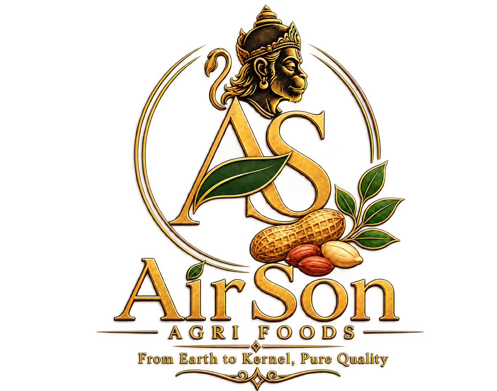

OUR BUSINESS
A Focused Approach
Building a groundnut processing business with responsible practices and long-term value in mind.
Learn more
Agriculture • Processing • Partnerships
AirSon Agri Foods is developing a groundnut processing business in Gujarat, India, with a focus on responsible sourcing, quality practices and long-term relationships with buyers and suppliers.
Project status: planning and development
Welcome to AirSon Agri Foods
We are planning a groundnut processing business designed to connect agricultural sourcing with future processing and business-to-business supply opportunities.
OUR BUSINESS
Building a groundnut processing business with responsible practices and long-term value in mind.
Learn more
OUR PRODUCTS
Explore the product categories being considered for future business supply.
Explore products
OUR FACILITY
Planning facility operations with attention to workflow, quality practices and food safety.
Learn about the facilityBuilding for the future
As the project develops, we will share verified information about products, operations, quality practices and supply capabilities.
Our Quality ApproachLet's connect
Buyers, distributors and suppliers are welcome to contact us to discuss potential requirements and partnerships.
Contact AirSon Agri Foods